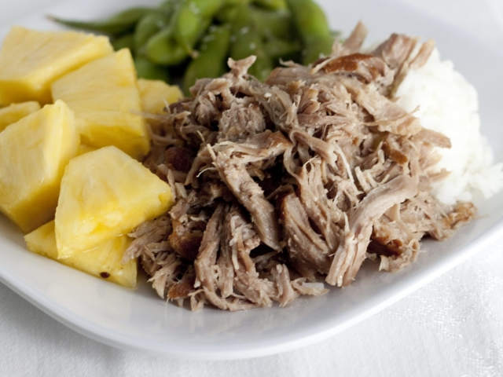

Kalua Pork

Description
Kalua Pork is a traditional Hawaiian dish made from slow cooked pork with Hawaiian salt.
Ingredients
- Boneless pork butt
- Hawaiian sea salt
- Liquid smoke
- Green cabbage (optional)
Cooking Directions
- Brown whole pork butt in a slow or instant cooker and leave it inside. Do not drain.
- Add in water, Hawaiian sea salt, and liquid smoke to pot. Cook for 90 minutes.
- Cut green cabbage into 2-inch squares. Add into kalua pork pot for the last 10 minutes of cooking.
- Once done cooking, shred the meat with a fork and serve hot with white rice.
Return to homescreen